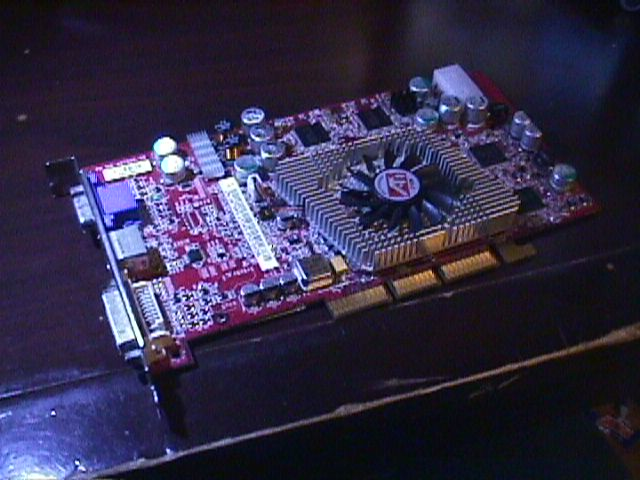
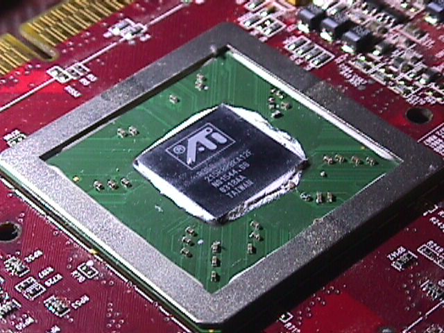

Blog Post 11/29/25
Hey fuckers
I hope you had a good thanksgiving.
Sadly I don’t have any books to talk about this month since I haven’t really been doing much reading. However I have played Voices of the Void for the first time. That game is absolutely amazing and extremely terrifying to the point where I needed to stop playing for the sake of my sanity. I don’t think I’ve ever felt my heart race so fast playing a video game before, it’s so fucked I love it. Some day I’ll get around to beating it.
My old dell dimension is still running great. (I’m still writing these blog posts on it lol) I was disappointed by the (lack of) power from its NVIDIA GeForce 2 mx so I asked my friend Wren if she had any old AGP graphics cards lying around. I was kinda hoping to find an FX 5200 or something newer but still underpowered but to my surprise she let me borrow her ATI Radeon 9800 Pro which was the fastest GPU available in 2003 and one of the fastest GPUs to have drivers that support windows 98!

Picture of the die from when I refreshed the thermal compound.
She said it had an issue with the molex power connector so before I powered it on I reflowed the solder joints and carefully expanded the pins with an x-acto knife and that seems to have worked fine. This is such an overpowered card for this computer and is no doubt being bottlenecked by its 996MHz Pentium III lol Thank you so much Wren let me know when you want it back <3

I also recently bought an iPod Photo from Wren (thanks again!) and have worked on modding it. I was going to talk about it more in this blog post but it quickly ballooned in scope and since I haven’t actually finished the project yet I figured I would spin that off into its own project page when it’s finished. Hopefully I’ll finish it before the end of the year.
Also, you know how in the first blog post I talked about my roomba and was skeptical of its usefulness? Yeah that thing kicks ass. It does obviously still require me to clear the floor like I would when I normally sweep which makes the feature where you can schedule a time for it to run automatically every week laughable to me but I do seriously recommend one if you think it could work well for you (as in one from like 2010, I would never touch a vacuum that needed an internet connection and an app jesus christ)
I think I’m gonna take another media break for the month of December. I’m pretty burnt out and winter break is coming up so I would really appreciate life slowing down for a bit. Hopefully I’ll have more books to share with you next month lol. Take care
Also, I was right about the seasonal depression :)